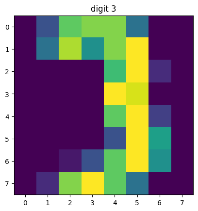
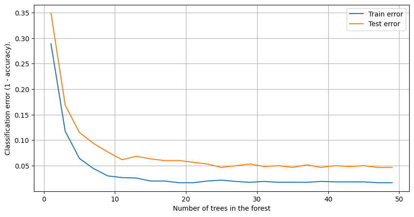
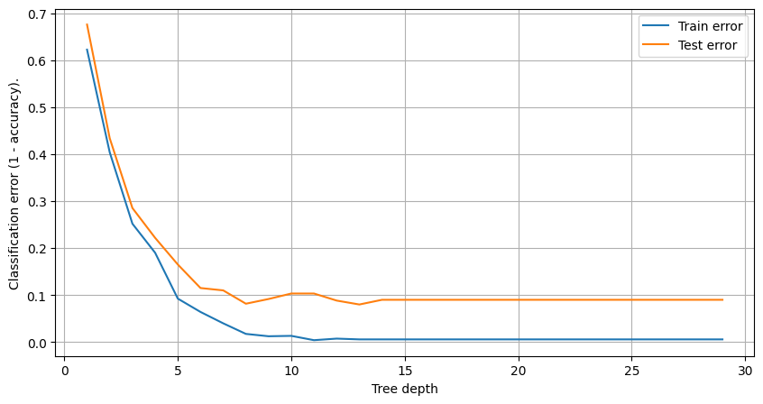
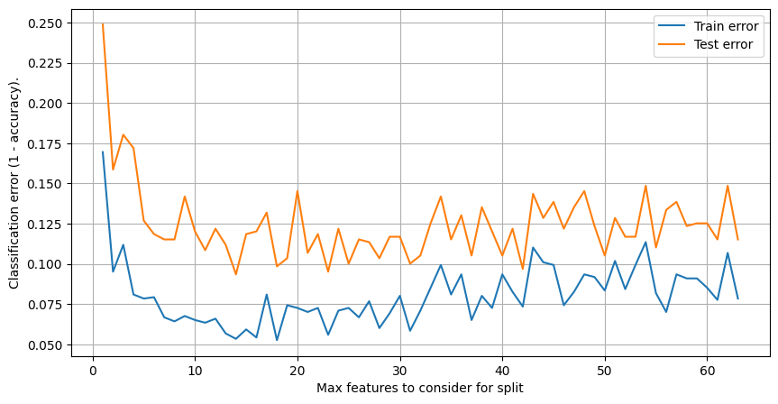
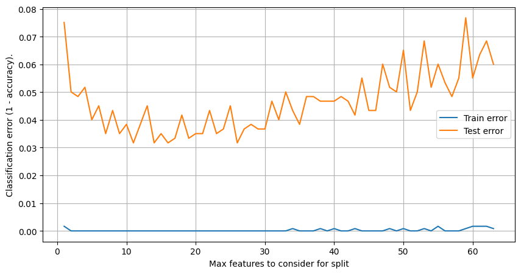

import matplotlib.pyplot as plt
import numpy as np
from sklearn.datasets import load_digits
from sklearn.metrics import accuracy_score
from sklearn.model_selection import train_test_split
from sklearn.tree import DecisionTreeClassifier
from tqdm.notebook import tqdmDigits Dataset
X, y = load_digits(n_class=10, return_X_y=True)
X.shape(1797, 64)assert X.shape[:1] == y.shapeix = np.random.randint(0, y.size)
plt.imshow(X[ix].reshape(8, 8))
plt.title(f'digit {y[ix]}')
plt.show()
X_train, X_test, y_train, y_test = train_test_split(X, y, test_size=1/3, random_state=42)Random Features
We need many stupid classifiers which make errors in different parts of the feature space.
n_trees = 5Make an array to store probability predictions for different runs.
y_probas = np.empty((n_trees, ) + y_test.shape + (10, ))
y_probas.shape(5, 599, 10)Train n_trees decision tree classifiers and save class probabilities to y_probas.
for i, state in enumerate(range(n_trees)):
model = DecisionTreeClassifier(max_features=4, max_depth=2, random_state=state)
model.fit(X_train, y_train)
y_pred = model.predict(X_test)
y_probas[i] = model.predict_proba(X_test)
accuracy = accuracy_score(y_test, y_pred)
feat_index, = np.nonzero(model.feature_importances_)
print(f'[{i:02d}] Test accuracy i {accuracy:.3f}')
print(f'[{i:02d}] Features used for splitting are {feat_index}')[00] Test accuracy i 0.319
[00] Features used for splitting are [10 33 43]
[01] Test accuracy i 0.352
[01] Features used for splitting are [21 50 54]
[02] Test accuracy i 0.294
[02] Features used for splitting are [ 2 25 44]
[03] Test accuracy i 0.275
[03] Features used for splitting are [10 28 61]
[04] Test accuracy i 0.265
[04] Features used for splitting are [36 43 58]plt.imshow(X_test[0].reshape(8, 8))
Shape of y_probas is n_trees x test_size x n_classes.
y_probas.shape(5, 599, 10)y_probas[-1, 0].argmax()6Averaging
Let’s average prediction of n_trees decision trees on a same test set.
y_proba_mean = y_probas.mean(axis=0)
y_proba_mean.shape(599, 10)y_proba_mean[:3]array([[0.01275487, 0.13177821, 0.11354822, 0.11483882, 0.10342248,
0.03542723, 0.26118463, 0.05922296, 0.08820299, 0.07961958],
[0.10853233, 0.08314822, 0.06579826, 0.20761667, 0.04763271,
0.13430245, 0.0463106 , 0.04824082, 0.06752656, 0.19089139],
[0.08518962, 0.0620693 , 0.11322425, 0.25086165, 0.01428571,
0.10487178, 0.0463393 , 0.02411379, 0.11661885, 0.18242574]])Make predictions (over the last n_classes axis).
y_pred_mean = np.argmax(y_proba_mean, axis=1)
print(y_pred_mean[:3])[6 3 3]Finally, evaluate such model (ensemble of trees) and compreare it with a performance of a single tree.
score_mean = accuracy_score(y_test, y_pred_mean)
print(f'Score of averaged across ensemble is {score_mean * 100 :.2f}')Score of averaged across ensemble is 60.93score = accuracy_score(y_test, y_probas[0].argmax(axis=1))
print(f'Score of a single tree is {score * 100 :.2f}')Score of a single tree is 31.892. Random Observations (Samples)
We can introduce randomization in building a tree with sampling objects from train set (bootstrap).
def bootstrap_indices(random_state, n_samples):
"""Return random indices with repetition (bootstrap)."""
return np.random \
.RandomState(random_state) \
.randint(low=0, high=n_samples, size=n_samples)bootstrap_indices(1, 10)array([5, 8, 9, 5, 0, 0, 1, 7, 6, 9])X_train.shape(1198, 64)features = [2, 19, 25, 44] # fix a set of features.y_probas = np.empty((n_trees, ) + y_test.shape + (10, ))
y_probas.shape(5, 599, 10)for i, state in enumerate(range(n_trees)):
ix = bootstrap_indices(state, X_train.shape[0])
X_train_ = X_train[ix, :][:, features]
y_train_ = y_train[ix]
X_test_ = X_test[:, features]
model = DecisionTreeClassifier(max_features=4, max_depth=2, random_state=2)
model.fit(X_train_, y_train_)
y_pred = model.predict(X_test_)
y_probas[i] = model.predict_proba(X_test_)
accuracy = accuracy_score(y_test, y_pred)
feat_index, = np.nonzero(model.feature_importances_)
print(f'[{i:02d}] Test accuracy i {accuracy:.3f}')
print(f'[{i:02d}] Features used for splitting are {feat_index}')[00] Test accuracy i 0.295
[00] Features used for splitting are [1 2 3]
[01] Test accuracy i 0.269
[01] Features used for splitting are [0 2 3]
[02] Test accuracy i 0.334
[02] Features used for splitting are [0 2 3]
[03] Test accuracy i 0.329
[03] Features used for splitting are [0 2 3]
[04] Test accuracy i 0.290
[04] Features used for splitting are [0 2 3]Average probablities over n_trees axis again and make predictions.
y_proba_mean = y_probas.mean(axis=0)
y_proba_mean.shape(599, 10)y_pred_mean = np.argmax(y_proba_mean, axis=1)
print(y_pred_mean[:3])[6 5 3]score_mean = accuracy_score(y_test, y_pred_mean)
print(f'Score of averaged across ensemble is {score_mean * 100 :.2f}')Score of averaged across ensemble is 39.07Combined Approach: Features + Objeservations
models = []
rs = list(range(5))
for state in rs:
ind = bootstrap_indices(state, X_train.shape[0])
X_train_, y_train_ = X_train[ind], y_train[ind]
model = DecisionTreeClassifier(max_features=6, max_depth=2, random_state=state)
model.fit(X_train_, y_train_)
models.append(model) # Save trained modelpredict_proba_models = []
for model in models:
y_pred_proba = model.predict_proba(X_test)
predict_proba_models.append(y_pred_proba)
y_pred = np.argmax(y_pred_proba, axis=1)
print('Accuracy: {:.3f}'.format(accuracy_score(y_test, y_pred)))
predict_proba_models = np.array(predict_proba_models)Accuracy: 0.337
Accuracy: 0.356
Accuracy: 0.289
Accuracy: 0.341
Accuracy: 0.275mean_predict_proba = predict_proba_models.mean(axis=0)
mean_predict = np.argmax(mean_predict_proba, axis=1)
print('Random Forest Accuracy:', accuracy_score(y_test, mean_predict))Random Forest Accuracy: 0.5859766277128547Random Forest
from sklearn.ensemble import RandomForestClassifiermodel = RandomForestClassifier(n_estimators=5, max_features=6, max_depth=2, random_state=1)
model.fit(X_train, y_train)
y_pred = model.predict(X_test)
print(accuracy_score(y_test, y_pred))0.5659432387312187We can reuse random states to build a tree manually.
rs = []
for m in model.estimators_:
rs.append(m.random_state)
print(rs)[1791095845, 2135392491, 946286476, 1857819720, 491263]def rf_train_test_accuracy(param_name, param_grid, **params):
"""Returns train and test perfomance of a RandomForest for
different values (param_grid) of a hyperparameter (param_name).
"""
train_score, test_score = [], []
clf = RandomForestClassifier(n_estimators=5, max_features=8, max_depth=6, random_state=1, n_jobs=-1)
if params:
clf.set_params(**params)
for param_value in tqdm(param_grid):
clf.set_params(**{param_name: param_value})
clf.fit(X_train, y_train)
train_score.append(accuracy_score(y_train, clf.predict(X_train)))
test_score.append(accuracy_score(y_test, clf.predict(X_test)))
return train_score, test_scoreRandom Forest: Number of Trees
train_accuracy, test_accuracy = rf_train_test_accuracy('n_estimators', range(1, 50, 2))plt.figure(figsize=(10,5))
plt.plot(list(range(1,50,2)), 1-np.array(train_accuracy), label='Train error')
plt.plot(list(range(1,50,2)), 1-np.array(test_accuracy), label='Test error')
plt.xlabel('Number of trees in the forest')
plt.ylabel('Classification error (1 - accuracy).')
plt.grid(True)
plt.legend()
plt.show()
Random Forest. Tree Depth
train_accuracy, test_accuracy = rf_train_test_accuracy('max_depth', range(1, 30))plt.figure(figsize=(10,5))
plt.plot(list(range(1,30)), 1-np.array(train_accuracy), label='Train error')
plt.plot(list(range(1,30)), 1-np.array(test_accuracy), label='Test error')
plt.xlabel('Tree depth')
plt.ylabel('Classification error (1 - accuracy).')
plt.legend()
plt.grid(True)
plt.show()
Random Forest: Number of Max Features
train_accuracy, test_accuracy = rf_train_test_accuracy('max_features', range(1, 64))plt.figure(figsize=(10,5))
plt.plot(list(range(1, 64)), 1-np.array(train_accuracy), label='Train error')
plt.plot(list(range(1, 64)), 1-np.array(test_accuracy), label='Test error')
plt.xlabel('Max features to consider for split')
plt.ylabel('Classification error (1 - accuracy).')
plt.legend()
plt.grid(True)
plt.show()
params = {
'n_estimators': 20,
'max_depth': 10
}
train_accuracy, test_accuracy = rf_train_test_accuracy('max_features', range(1, 64), **params)plt.figure(figsize=(10,5))
plt.plot(list(range(1, 64)), 1-np.array(train_accuracy), label='Train error')
plt.plot(list(range(1, 64)), 1-np.array(test_accuracy), label='Test error')
plt.xlabel('Max features to consider for split')
plt.ylabel('Classification error (1 - accuracy).')
plt.legend()
plt.grid(True)
plt.show()
Typically something between log2(k) and sqrt(k) will work as a max_features.